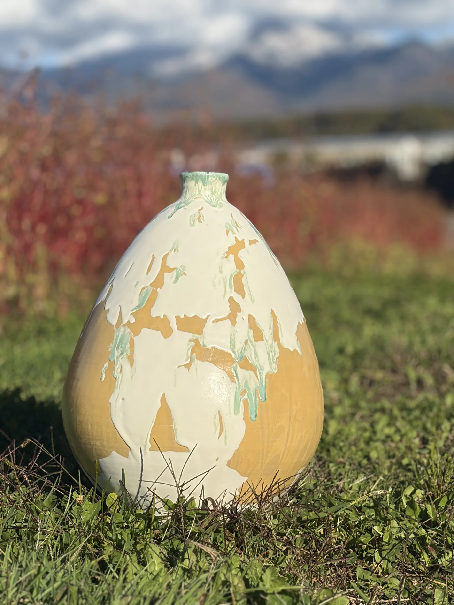

STORIES
食卓の向こうにある、
人と土地の物語。
神楽坂の食卓に集まった人々の記録と、原村と信楽を結ぶものづくりなど、地域で進むプロジェクトの物語を届けます。

京都・舞鶴 × 東京・神楽坂
海の移ろいを伝えることが、魚の魅力を伝えること
舞鶴の仲買人・上林大基さんが神楽坂の食卓に届けた、若狭湾の魚と、その背景にある人の営み。2026年10月14日の記録。

長野・原村 × 滋賀・信楽
信楽の土、原村の葡萄。
ENSOU PROJECT。キフタトワインズが嘉祥窯の特製アンフォラで熟成するオレンジワイン。2026年の仕込みはピノ・グリ80％、ゲヴュルツトラミネール20％。

熊本・阿蘇 × 東京・神楽坂
生産者と囲む、熊本・あか牛を食す特別な夜
「自然を食す。」は、生産者と料理人、そして消費者がともに食卓を囲む1日限りの食事の場だ。土地を知り、生産者に出会い、その食材を食べることで、次のアクションを生み出す。